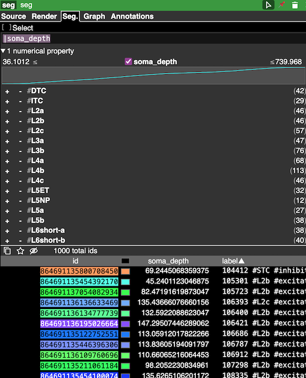

Segment Properties
Segment properties are a method of organizing information about segment IDs in the current Google/Spelunker version of Neuroglancer.
Each segmentation layer can have at most one set of segment properties, expressed as an additional source for the layer.
The segment properties themselves are simply a JSON file following a particular specification, that allows you to associate labels, descriptions, tags, and numerical values with each segment ID.
Basics
Segment properties consist of a list of segment IDs and a collection of properties for each ID in the list. There are four types of properties that can be viewed in Neuroglancer:
- Label: A string that names each segment ID. Only one per ID per property list.
- Description: A longer description of each segment ID. Only one per ID per property list.
- Tags: A small collection of strings that can be used to filter segments. There can be more than one tag per ID.
- Number: Numeric properties (e.g. depth, synapse count) for each cell. There can be more than one numeric property provided.
In addition, the specification allows string properties, but these are not currently shown in Neuroglancer.

Building segment properties
The easiest way to work with segment properties is to build them from a dataframe.
The only absolute requirement is that the dataframe has a column associated with segment IDs.
For example, assume we have a pandas dataframe df with columns segment_id, soma_depth, and cell_type with some data in them.
We can use the SegmentProperties.from_dataframe method to build a SegmentProperties object from this dataframe.
In this case, we want soma_depth to be a numeric property and the values cell_type to be a tag.
import pandas as pd
from nglui.segmentprops import SegmentProperties
df = pd.DataFrame(
{'segment_id': [1, 2, 3],
'soma_depth': [100, 200, 300],
'cell_type': ['pyramidal_cell', 'interneuron', 'interneuron']}
)
seg_prop = SegmentProperties.from_dataframe(
df,
id_col='segment_id',
number_cols='soma_depth',
tag_value_cols='cell_type'
)
To get a formatted segment proerties, you can use the to_dict method:
seg_prop.to_dict()
which will produce something like:
{'@type': 'neuroglancer_segment_properties',
'inline': {'ids': ['1', '2', '3'],
'properties': [{'id': 'tags',
'type': 'tags',
'tags': ['interneuron', 'pyramidal_cell'],
'values': [[1], [0], [0]]},
{'id': 'soma_depth',
'type': 'number',
'values': [100, 200, 300],
'data_type': 'int32'}]}}
Note that multiple numeric properties can be passed a list of column names.
Tag properties
There are two ways to associate tags with segment IDs.
When using the tag_value_cols argument, the unique values (except None) across all specified columns are used as tags.
Values that are duplicated across different columns will be counted as a single tag.
For tag value columns, the order is determined by the sorting of values.
By default, this is alphabetical, but it will follow the order from categorical data in pandas.
If you need more fine control over the tags, you can use the tag_bool_cols argument.
Here, a column name or list of column names are passed with the expectation that each column name represents a tag and if the value of a given row is True, the tag is associated with the segment ID.
Here, the order will follow the order of the list.
Both tag_value_cols and tag_bool_cols can be used together, with the order being values followed by boolean columns.
You can also specify tag_descriptions, a dictionary where the tag names are the keys and longer-form descriptions are the values.
Any tag without a description will be passed through directly.
Number properties
If you look at the JSON output above, you see that the soma_depth property has a field "data_type" that specifies the type of the numerical property, in this case int32.
Data type values are inferred from the column dtype and safe conversions are validated.
Building segment properties manually
It is also possible to build segment properties manually with the SegmentProperties class.
Each type of property is represented by a different class: LabelProperty, DescriptionProperty, TagProperty, and NumberProperty.
Each property type has required and optional arguments that are used to build the property.
More details can be found in the API reference.
You can then either build a SegmentProperties object from these properties, for example:
from nglui.segmentprops import SegmentProperties, LabelProperty, NumberProperty
labels = LabelProperty(values=['cell_1', 'cell_2', 'cell_3'])
numbers = NumberProperty(
id='hugeness',
values=[1,2,3],
data_type='float32',
)
props = SegmentProperties(
ids = [1,2,3],
label_property=labels,
number_properties=numbers, # Could be a list of NumberProperty objects as well.
)
Note that validation happens on the to_dict method, so you can build invalid properties (such as different-length lists of ids and property values) without error.
Saving segment properties
Segment properties must be hosted on a server to be used in Neuroglancer. There are two main approaches to this:
1. Use a CAVE state server endpoint to upload properties.
The CAVE state server has a special endpoint you can use to upload segment properties.
After initializing a CAVEclient object, you first upload the properties with the upload_property_json method and then build a link from the resulting id you get back.
from caveclient import CAVEclient
client = CAVEclient('MY_DATASTACK')
ngl_url = "https://neuroglancer-demo.appspot.com"
prop_id = client.state.upload_property_json(seg_prop.to_dict())
prop_url = client.state.build_neuroglancer_url(prop_id, ngl_url=ngl_url, format_properties=True)
You will then use the resulting URL in the source field of a segmentation layer in Neuroglancer.
This approach is convenient, but there is a limit to how large the properties list can be. In addition, you do not get to choose a readable URL for the properties and they must be behind CAVE authentication.
2. Save the properties to a file web-accessible location.
For large properties or properties you want to be publicly accessible, you can save the properties to a file and host them on a web-accessible location with a particular organization.
First, save the properties to a file called info (no extensions!)
import json
with open('info', 'w') as f:
json.dump(props.to_dict(), f)
Next, create a directory in a web-accessible location (e.g. https://my-server/my-property) or public cloud bucket (e.g. gs://my-bucket/my-property) and upload the info file to that directory.
The URL you will use to load the properties into Neuroglancer will be precomputed:// followed by the URL of the directory or bucket (e.g. precomputed://https://my-server/my-property or precomputed://gs://my-bucket/my-property).
Adding segment properties to Neuroglancer
If saved segment properties with either of the two methods above, you will get a URL that you can load into Neuroglancer as a source for a segmentation layer.
If you want to do this manually in a browser you have already have open, select the segmentation layer, go to the source tab, and click the + button to add a new source and paste the URL in.
Segment properties in StateBuilder.
The StateBuilder class lets you set either static segment properties or segment properties that are generated from a dataframe.
To set static segment properties from a hosted JSON file, you simply set a segment properties value on the SegmentationLayerConfig.
from nglui import statebuilder
seg = statebuilder.SegmentationLayerConfig(
source="precomputed://gs://my-bucket/my-segmentation",
segment_properties='precomputed://https://my-server/my-property',
)
and proceed to build the state as normal.
Segment property maps
Alternatively, you can set segment properties from data when you render the state. Here, we have to create the segmentation layer first and then set the segment property mapping on the layer.
seg = statebuilder.SegmentationLayerConfig(
source="precomputed://gs://my-bucket/my-segmentation",
seg.add_segment_properties_map(
label_col='id_ref',
tag_value_cols=['cell_type', 'classification_system'],
number_cols=['soma_depth'],
)
The arguments follow the SegmentProperties.from_dataframe method.
Segment property maps require a CAVEclient to be set when building the StateBuilder object, as the resulting properties need to be uploaded to the CAVE state server.
In addition, if you want to use a different dataframe for segment properties than for data, you can specfify a mapping_set.
Mapping sets are found throughout StateBuilder, and let you pass a dictionary of dataframes to use for different purposes, where the keys are these mapping set values.
Note that if you use a mapping set anywhere, you have to specify them for all data rules in the state.